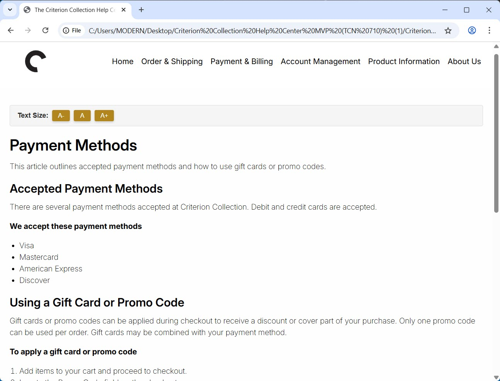

Back to Portfolio

Criterion Collection Online Help Center
The Criterion Collection relied on a long, unstructured FAQ, making it hard for users to find answers. The goal was to create a clear, task-based help center that improves usability, guides users through key actions, and makes content easy to scan and navigate.
Tools:
Visual
Studio Code
HTML
CSS
JavaScript
Industries:
Software
Media/Streaming
To view the project in GitHub, click the button below.
View on GitHubContribution
I focused on creating a user-friendly help center that made it easy for users to find answers. Over the course of the project, I:
- Wrote content for Account Management, Order & Shipping, and Payments & Billing.
- Created a content priority guide to ensure the most important information was surfaced first for users.
- Designed user flows to guide users through key actions, improving task completion and navigation.
- Created the page structure (Document Object Model) for the prototype, building the layout and content hierarchy in HTML.
- Conducted user research through card sorting and both moderated and unmoderated usability tests.
Process
- Persona Creation: Focused design decisions on a representative user.
- Card Sorting: Learned how users group help topics, shaping the initial IA.
- Information Architecture (IA): Set up categories and article order; revised IA once based on early tests.
- Priority Guide: Mapped content order so users see the most important info first.
- User Testing: Conducted three rounds: guided sessions to observe behaviour and unguided sessions to measure independent task success.
- Design Tweaks: Applied iterative UI changes based on user feedback.
Challenges
- The team lacked a shared platform for collaborative coding, so one member had to collect code from others, merge it locally in Visual Studio, and then upload the combined prototype to a shared drive. This made coordination and testing more complex.
- Iterating designs based on user feedback demanded careful follow-up testing to confirm improvements.
Impact
- Delivered a simple, task-focused help centre that’s easy to scan and use.
- Content is written in plain language and organised by task.
- User testing scores improved from ~7.5/10 (early prototype) to 8–9/10 (later rounds), showing much better usability than the original FAQ.